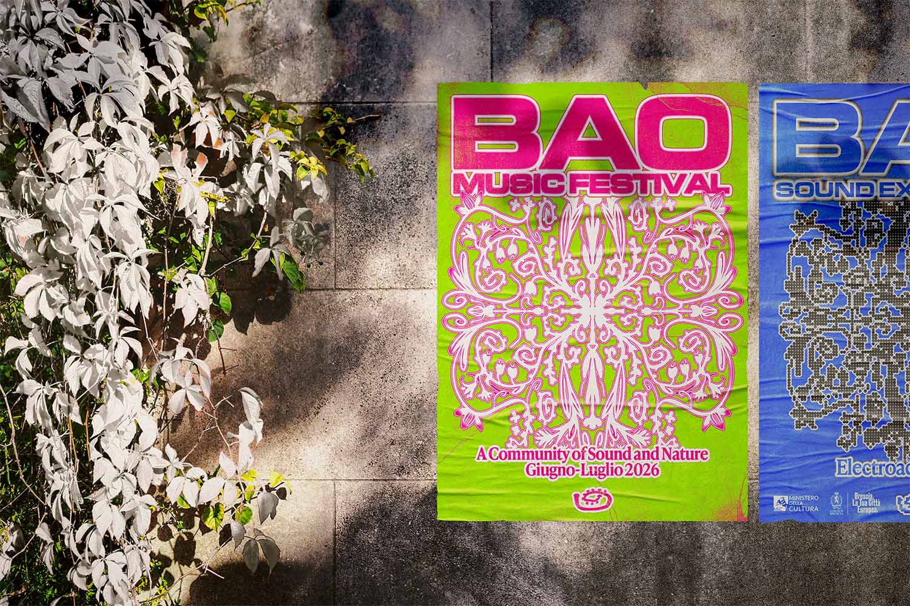
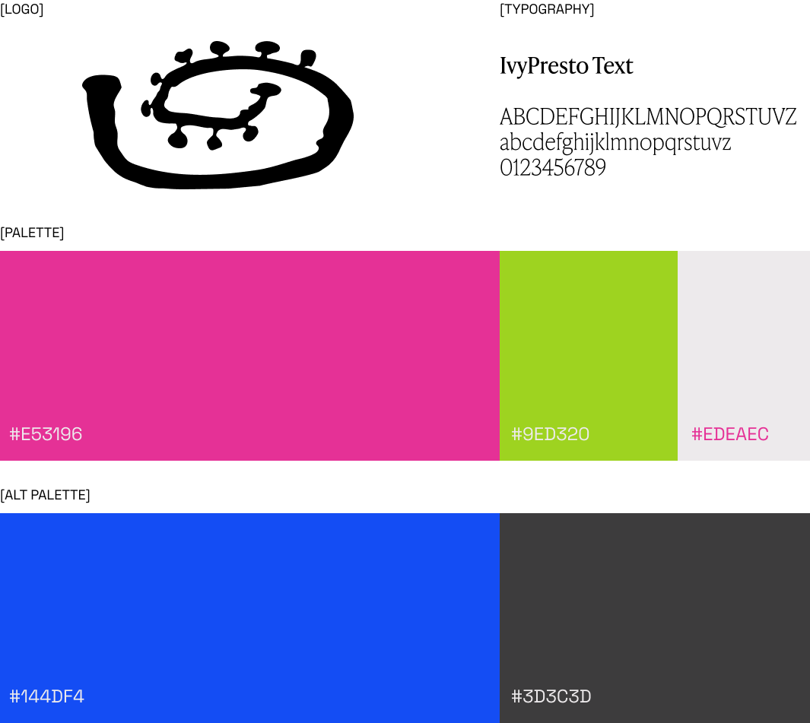

BAO is a project that aims to highlight Brescia's territory, nature, and talents.
It's made up of two main events: BAO Music Festival and BAO Sound Experience.
The former is a summer festival that explores the connection between music and nature,
while the latter fuses experimental sounds with the city's historical buildings and landmarks.
The brief was to create a branding that could be declined in both aspects of BAO,
highlighting their differences while also mantaining their connection.
This was done through the use of contrasting color palettes, and by creating
a pattern that declined in two different ways: one follows the curved motion of
nature, while the other is broken up in round pixel-like elements.
From the logo to the posters, website, social media posts, and merch, we created
a unique and recognisable visual system that communicated BAO's commitment to sound, nature, and community.

